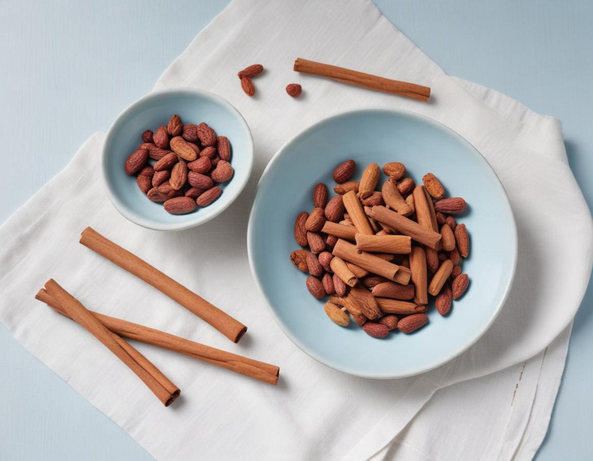
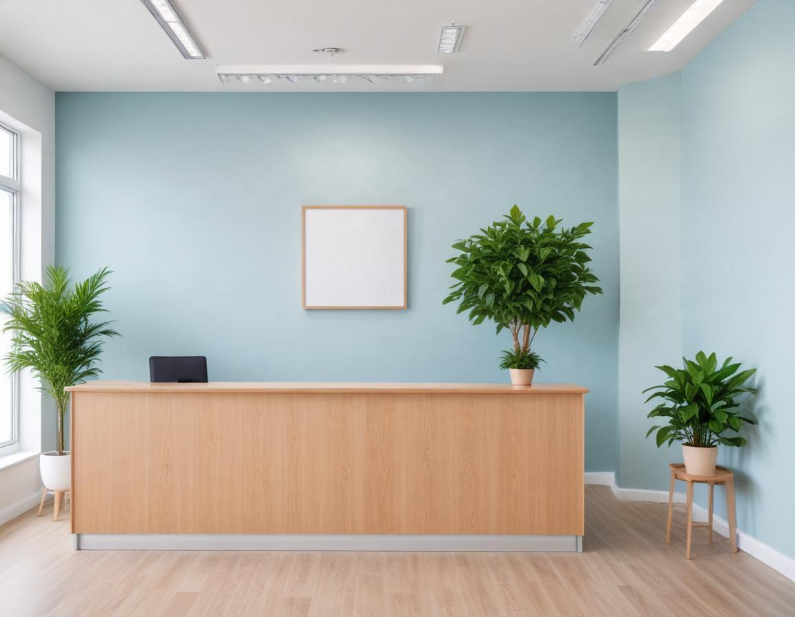
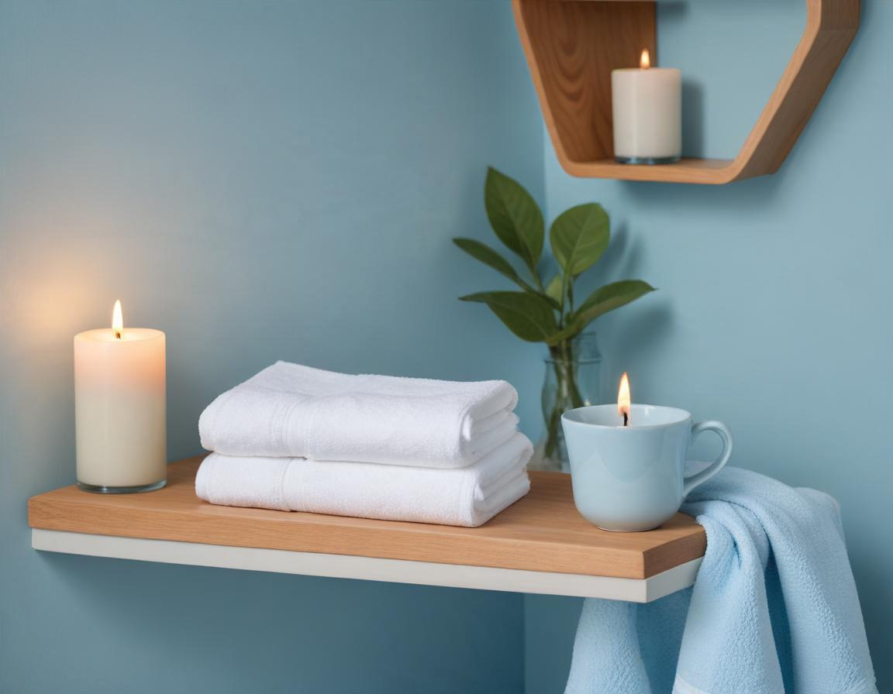

오늘의 리듬
매일 자정(한국 시간)에 바뀝니다. 한방가이드에도 매일 새 글이 올라옵니다.
오늘의 달
오늘의 해 (서울)
오늘의 잠
오늘의 식욕
오늘의 위로
잠깐, 숨 한 번 고르고 가세요
이 화면을 보는 동안만이라도 쉬어 가셔도 됩니다. 아무것도 하지 않으셔도 괜찮습니다.
4초 들이쉬고, 6초 내쉬어 보세요
긴장을 푸는 데 도움이 될 수 있는 일반적인 방법이며 치료를 대신하지 않습니다. 어지럽거나 불편하면 멈추세요.
음성으로 듣기 (약 2분)
AI로 만든 음성입니다. 눈을 감고 들으셔도 좋습니다.
오늘은 어떠셨어요?
누른 내용은 저장하거나 전송하지 않습니다.
건강한 리듬의 두 축, 잠과 식욕
사람의 가장 기본적인 두 욕구인 수면욕과 식욕이 흔들리면 몸의 리듬이 함께 흔들립니다. 좋은꿈참사랑한의원 노량진점은 이 두 가지를 가장 먼저 살핍니다.
불면·수면
잠들기 어렵다, 자주 깬다, 새벽에 깬다, 자도 개운하지 않다. 잠의 모양을 먼저 묻고 생활 전체의 리듬과 함께 살핍니다.
불면 안내 보기 →
대사증후군·식욕
체중, 혈압, 혈당, 콜레스테롤이 걱정될 때 수치보다 먼저 식욕과 식사, 잠의 리듬을 살핍니다. 복용 중인 약은 임의로 중단하지 않습니다.
대사·식욕 안내 보기 →
잠이 부족하면 식욕이 커지는 경향이 있는 것으로 알려져 있어, 두 문제는 함께 오는 경우가 많습니다.
환자를 위한 치료 중심 네트워크
좋은꿈참사랑한의원 노량진점은 좋은꿈 네트워크의 한의원입니다. 다양한 원인과 증상을 복합적으로 살펴, 한 분 한 분에게 가장 맞는 치료법을 찾습니다.
회복은 한 번에 오지 않고, 이어서 들을 때 시작됩니다.
노량진점 진료과목
- 한방내과
- 한방부인과
- 한방소아과
- 한방안·이비인후·피부과
- 한방신경정신과
- 침구과
- 한방재활의학과
- 사상체질과

좋은꿈 네트워크가 함께 살피는 것
불면과 불안, 어린이 수면까지 몸과 마음을 함께 봅니다.
추나와 체형 교정으로 몸의 구조를 살핍니다.
자라는 아이와 공부하는 학생의 리듬을 살핍니다.
사고 뒤 남은 불편을 차근차근 살핍니다.
지점마다 운영 중인 클리닉이 다릅니다. 필요한 진료는 방문 전 전화로 문의해 주세요.
의료진
처음 오시나요?

오시면 이런 순서로 진행됩니다.
 접수
접수
성함과 불편한 곳을 간단히 적어 주세요. 상담
상담
원장이 이야기를 충분히 듣습니다. 진찰
진찰
필요하다고 판단될 때 필요한 방법으로 살핍니다. 치료
치료
오늘 상태에 맞는 치료를 진행합니다. 귀가 전 안내
귀가 전 안내
집에서 지켜볼 점과 다음에 확인할 일을 알려드립니다.
일상의 말로 여쭙니다
“무릎이 아프다”에서 한 걸음 더 들어갑니다.
“계단을 오를 때와 내려갈 때 중 언제 더 불편한가요?”
몸따삶잘
온기
생활
몸은 따뜻한지, 소화는 편한지, 잠은 잘 자는지, 대소변은 어떤지 — 통증과 함께 평소 생활을 살핍니다.
아픈 곳 하나만이 아니라 몸 전체의 리듬을 함께 봅니다.
진찰은 이럴 때 합니다
모든 분이 같은 검사를 받지는 않습니다. 말씀해 주신 증상에 따라 필요한 것만 합니다.
다시 오시나요?
“지난 치료 뒤 일상에서 달라진 점이 하나 있었나요?”
이렇게 편하게 말씀해 주세요.
- 잘 잤어요
- 계단이 편해졌어요
- 아직 그대로예요
지난번 이야기는 이어서 여쭙니다. 처음부터 다시 설명하지 않으셔도 됩니다.
오래 다니시는 분의 이야기도 처음처럼 이어서 듣겠습니다.
추나·체외충격파·통증 진료
추나요법은 손으로 척추·관절·근육의 균형을 살피고 맞춰 가는 한의학 수기요법입니다. 통증은 “어디가 아프다”보다 “어떤 동작에서 불편한가”를 먼저 듣는 데서 시작합니다.
몸 밖에서 아픈 부위에 충격파 에너지를 전달하는 방법입니다. 통증 부위를 넓게 훑어 예민한 지점을 찾은 뒤, 시간과 강도를 조금씩 조절하며 진행합니다. 필요하다고 판단될 때 침, 약침, 추나와 이어서 씁니다.
- 불편한 동작을 묻습니다
“계단을 내려갈 때 난간을 잡으시나요?”처럼 일상 동작으로 여쭙니다. - 아픈 곳을 넓게 살핍니다
통증 부위만이 아니라 주변까지 눌러 보고, 어느 지점이 예민한지 찾습니다. - 필요한 방법을 연결합니다
필요하다고 판단될 때 체외충격파, 침, 약침, 추나 등을 상태에 맞게 이어서 씁니다.  같은 동작으로 다시 확인합니다
같은 동작으로 다시 확인합니다
치료 뒤 달라진 점을 기록해 두고, 다음 진료에서 이어서 여쭙니다.
오래된 통증은 몸이 통증에 예민해져 있는 경우도 있어, 반응을 보며 방법을 조정합니다. 충분한 반응이 없으면 다른 방법을 검토하고, 필요하면 다른 의료기관 진료를 안내합니다.
추나요법의 적용 대상과 건강보험 적용 여부, 본인부담금은 진찰 후 안내해 드립니다. 개인마다 진료 내용과 기간은 다를 수 있습니다.
회복지도 예시 보기우리가 말하는 회복

회복은 증상이 사라지는 것만이 아니라, 일상의 리듬이 돌아오는 것입니다.
눈앞의 불편뿐 아니라 체질과 전반적인 상태까지 함께 살핍니다.
어린이도 치료를 무서워하지 않도록 천천히 설명하고 살핍니다.
치료 부위와 피부 감각, 건강 상태에 맞춰 온도와 시간을 환자분마다 살핍니다. 더 세심한 확인이 필요한 분은 상태를 먼저 여쭙니다.
침, 온열, 근육 이완 하나하나를 서두르지 않습니다.
나의 회복지도
이름과 연락처가 없는 예시입니다.
첫날
평지는 괜찮은데, 계단을 내려갈 때 오른쪽 무릎이 아파 꼭 난간을 잡습니다.
다시 왔을 때
한 층은 난간 없이 내려왔습니다. 두 층째부터는 다시 잡습니다.
다음에 확인할 일
“지난번엔 한 층까지 난간 없이 내려가셨는데, 요즘은 어떠세요?”
진료 주제별 안내
궁금한 주제를 눌러 자세한 안내를 읽어 보세요.
한방가이드 최신 글
일상의 말로 쓴 건강 정보입니다. 새 글이 계속 올라옵니다.
새벽에 자꾸 잠이 깨는 이유는 무엇이고, 어떤 점을 살펴보나요?
새벽에 깨는 이유는 수면 후반의 얕아진 잠, 카페인·음주, 야간 소변, 통증, 열감, 속 불편, 불안, 수면무호흡 등 다양해서 몇 시에 왜 깨는지와 다시 잠드는지를 먼저 묻고 생활 전체와 함께 살핍니다.
수정 2026-11-22
꿈이 많고 자도 개운하지 않을 때는 어떤 점을 살펴보나요?
꿈이 많고 자도 개운하지 않다는 호소는 실제 수면 시간, 자주 깨는지, 코골이, 낮의 졸음과 컨디션을 먼저 묻고 소화와 몸의 긴장, 스트레스까지 함께 살핍니다.
수정 2026-11-22
한의원 초음파 진단은 언제 하고, 무엇을 살펴보나요?
초음파 진단은 모든 환자에게 하는 검사가 아니라, 통증 부위의 힘줄·근육·관절 주변 상태를 눈으로 확인할 필요가 있다고 판단될 때 사용하며, 영상을 보며 환자분이 이해할 수 있게 설명합니다.
수정 2026-11-22
코를 크게 골고 자다가 숨이 멎는 것 같을 때는 어떻게 하나요?
큰 코골이와 자다가 숨이 멎는 듯한 모습, 아침 두통과 낮의 심한 졸음은 수면무호흡 가능성이 있어 수면 검사를 먼저 권하며 한의원에서는 생활과 체중, 코막힘 같은 요인을 함께 살피고 검사 결과를 약속하지 않습니다.
수정 2026-11-22
잠들기까지 한 시간 넘게 걸릴 때 한의원에서는 무엇을 먼저 묻나요?
누워도 잠이 오지 않는 입면 어려움은 잠자리에 드는 시각과 낮의 카페인, 자기 전 화면, 걱정과 몸의 긴장을 먼저 묻고 생활 리듬과 함께 살피며 우울감이나 수면무호흡이 의심되면 병원 진료를 권합니다.
수정 2026-11-22
자주 묻는 질문
처음 가면 어떤 순서로 진료하나요?
접수, 상담, 진찰, 치료, 귀가 전 안내 순서로 진행합니다. 상담에서 원장이 불편한 점을 충분히 듣고, 필요하다고 판단될 때 필요한 방법으로 진찰합니다.
다시 방문하면 처음부터 다시 설명해야 하나요?
아니요. 지난번 상담 내용을 이어서 여쭙니다. 지난 치료 뒤 일상에서 달라진 점이 있었는지부터 묻습니다.
체외충격파는 어떤 진료인가요?
몸 밖에서 아픈 부위에 충격파 에너지를 전달하는 방법입니다. 통증 부위를 넓게 살피고 시간과 강도를 조절하며, 필요하다고 판단될 때 침·약침·추나와 이어서 씁니다. 대상, 횟수, 비용은 진찰 후 안내해 드립니다.
추나요법은 어떤 진료인가요?
손으로 척추·관절·근육의 균형을 살피고 맞춰 가는 한의학 수기요법입니다. 적용 대상과 건강보험 적용 여부, 본인부담금은 진찰 후 안내해 드립니다.
모든 환자가 같은 검사를 받나요?
아니요. 진맥, 설진, 초음파 등은 말씀해 주신 증상에 따라 필요하다고 판단될 때만 합니다.
몸따삶잘이 무엇인가요?
몸은 따뜻한지, 소화는 편한지, 잠은 잘 자는지, 대소변은 어떤지, 통증과 함께 평소 생활을 살핀다는 뜻입니다.
좋은꿈참사랑한의원 노량진점은 어디에 있나요?
서울 동작구 만양로2길 2 신성빌딩 3층(상도동)에 있습니다. 7호선 상도역 3번 출구에서 오거리까지 직진 약 200m입니다.
진료시간은 어떻게 되나요?
공개된 안내 기준으로 평일 09:30~20:00, 토요일 09:30~15:00이며 점심시간은 평일 13:00~14:00입니다. 방문 전 02-815-7510으로 확인해 주세요.
예약·오시는 길
주소
7호선 상도역 3번 출구에서 오거리까지 직진 약 200m.
 진료시간
진료시간
진료시간은 공개된 안내 기준입니다. 방문 전 전화로 확인해 주세요.
좋은꿈 네트워크 지점
노량진 · 노원(마들) · 광명 · DMC · 강서 · 서현 · 용문 등 (지점 목록은 확인 필요)